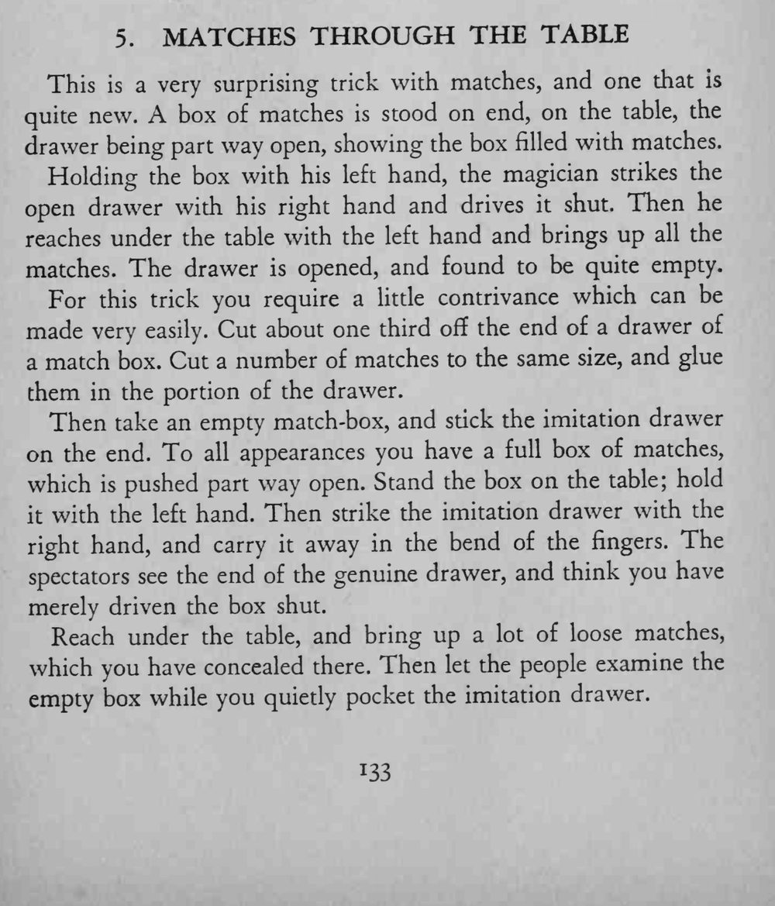

满满一盒火柴立在桌上，魔术师右手把内屉推进去，左手伸到桌下再拿上来时，竟抓出一大把火柴，盒子却空了。
拍打和内屉的掉包要在同一个动作里完成。

This is a very surprising trick with matches, and one that is quite new. A box of matches is stood on end, on the table, the drawer being part way open, showing the box filled with matches. Holding the box with his left hand, the magician strikes the open drawer with his right hand and drives it shut. Then he reaches under the table with the left hand and brings up all the matches. The drawer is opened, and found to be quite empty. For this trick you require a little contrivance which can be made very easily. Cut about one third off the end of a drawer of a match box. Cut a number of matches to the same size, and glue them in the portion of the drawer. Then take an empty match-box, and stick the imitation drawer on the end. To all appearances you have a full box of matches, which pushed part way open. Stand the box on the table; hold it with the left hand. Then strike the imitation drawer with the right hand, and carry it away in the bend of the fingers. The spectators see the end of the genuine drawer, and think you have merely driven the box shut. Reach under the table, and bring up a lot of loose matches, which you have concealed there. Then let the people examine the empty box while you quietly pocket the imitation drawer.